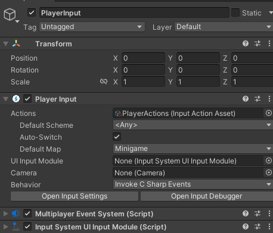
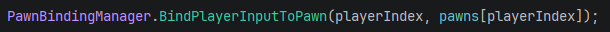
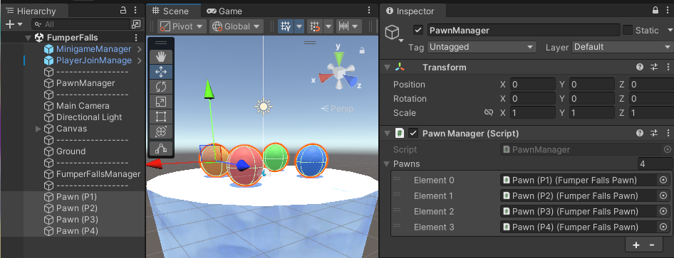

This is a Unity Project framework that allows for a unique game jam that I founded while Vice President of the WPI IGDA chapter. This framework serves to connect several multiplayer minigames created independently by different developers and allows for all entries to the jam to be combined into a single executable.
Framework
The framework is developed and distributed through the following Github Repo
Multiplayer Input System
For handling multiplayer input we start with Player Input and Player Input Manager scripts from Unity's Input System package. When a controller is connected, the Player Input Manager will instantiate an instance of a provided Player Input prefab connected to that controller. Our player controller script can then subscribe to input events stored on the Player Input component.

Typically, the Player Input prefab that we provide will be the entire player character object and that object will be destroyed when you leave the scene and recreated in the next. However, we need our input to maintain player slots across scenes and connect to the unique player characters of each scene.
We solve these problems by having the Player Input objects be separated from the characters the players control. The prefab we provide is effectively an empty placeholder that contains only the components required for collecting input and interacting with menus that has been marked DontDestroyOnLoad. These objects are then tied to Player data objects on the overarching MinigameManager singleton to be bound to later.
Now it's time to talk about our Pawn class. Player characters in minigames derive from the class in order to receive input.
The following function call binds the Pawns input functions to the Player Input objects maintained by the framework.

The provided Pawn Manager class binds input given a list of Pawns.

In order to subscribe to the Player Inputs C# events, we can't subscribe to individual functions, we instead have to subscribe to a generic event that triggers whenever any input is pressed.
Binding Pawn to Player Input
/// <summary>
/// Bind a pawn to a PlayerInput. This will bind the pawn's OnActionPressed and OnActionReleased methods to the PlayerInput's action map.
/// </summary>
/// <param name="playerIndex">The index of the player to bind to this pawn.</param>
/// <param name="pawn">The pawn to bind. </param>
public static void BindPlayerInputToPawn(int playerIndex, Pawn pawn) {
if (playerIndex < 0 || playerIndex >= PlayerManager.players.Count) {
string message = $"Failed to bind pawn {pawn.name}, player index {playerIndex} is out of range (0-{PlayerManager.players.Count}).";
throw new Exception(message);
}
PlayerInput playerInput = PlayerManager.players[playerIndex].playerInput;
playerInput.onActionTriggered += pawn.HandleInput;
playerInput.onActionTriggered += HandlePauseButton;
// Add to list of bound pawns so that it can later be unbound
pawn.playerIndex = playerIndex;
_boundPawns.Add(pawn);
}
The code below shows an example of how to get input using a Pawn. The Pawn class has two functions that are executed whenever input is received: OnActionPressed and OnActionReleased. To determine which button was pressed, we need to evaluate the name string of the context parameter.
Example Pawn Input
public class ExamplePawn : Pawn {
// Variables
Vector2 moveInput = Vector2.zero;
// Handle input
protected override void OnActionPressed(InputAction.CallbackContext context) {
if (context.action.name == PawnAction.Move) {
moveInput = context.ReadValue<Vector2>();
// Handle movement in Update
}
if (context.action.name == PawnAction.ButtonA) {
// Jump
}
}
}
To improve usability when comparing against the string values, we have provided a static class named PawnAction which contains constant string variables for each possible action.
Samples and Documentation
Instructions for creating a minigame for the collection can be found in the User Guide